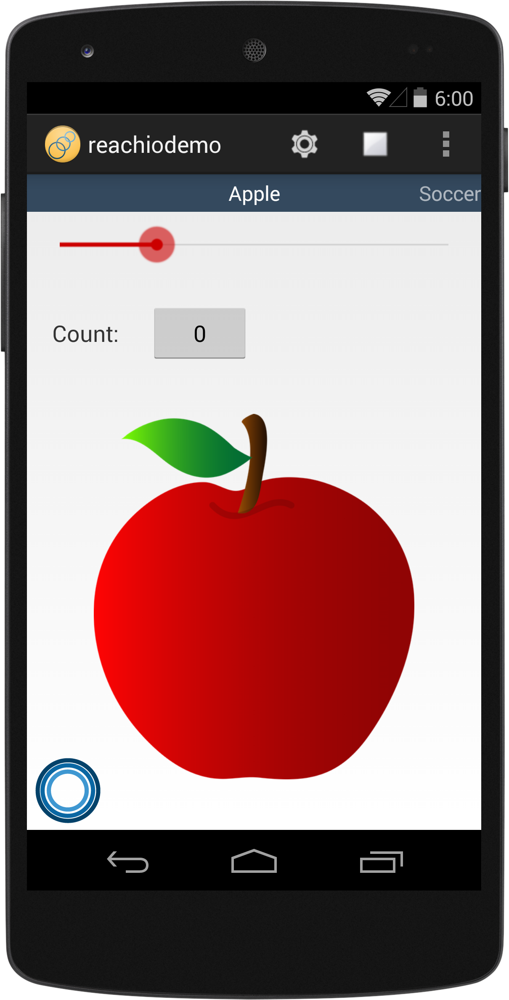

TEST

Reach.io
Extend the reach area of the thumb for one-handed mobile device touch interaction
Jinhyun Kim
Muzi Li
Updated 12/11/2014
Introduction
The average screen sizes of newly released smartphone devices is increasing every year. If you use your phone with only one hand, it is becoming more and more difficult to reach far corners of your phone touch screen.
Reach.io is an Android project demonstrating how to extend the reach area of the thumb for one-handed mobile touch interaction.
There are some similar works done to solve the same problems:
- iPhone6 Reachability feature - video
- Smartian T1 - video
But we wanted to provide an alternative method to help users reach far corners (even in horizontal) without hiding other parts of a screen.
Here is a short overview video of Reach.io
Design